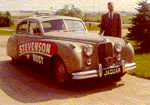
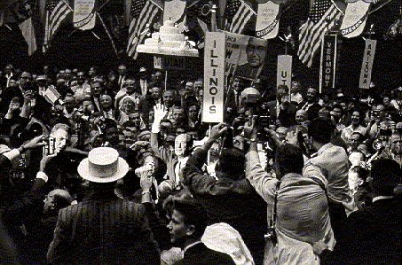
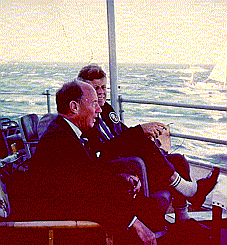
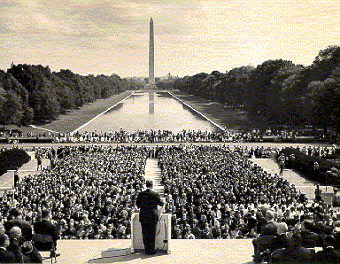
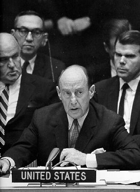

|  | Prior to the 1960 Democratic National Convention in Los Angeles, Stevenson announced that he would not seek the party's nomination. However, he would accept another draft. Still hoping to be the nominee, Stevenson refused to give the nominating address for John F. Kennedy. Once Kennedy secured the nomination, Stevenson, an enormously popular speaker, campaigned actively for him. |
| In 1960, Stevenson, now the elder statesman, caused a
frenzy when he walked onto the convention floor. While his supporters were enthusiastic,
their numbers never amounted to a victory. After the 1952
election, Stevenson,
though flattered by the support he received, commented, "Thousands wrote gracious,
flattering letters, after the election, explaining why they did not vote for me.
They seemed to feel they owed me an explanation. I was touched and flattered, but, I
confess the thought occurred to me that a little "x" in the right place on the
ballot would have been so much easier than a long, thoughtful letter." |
 |
|  | As the Democratic party's elder statesman, Stevenson considered himself a
logical choice for Secretary of State; instead, Kennedy offered him the position of United
States Ambassador to the United Nations. Initially reluctant to accept, once commited, he
devoted himself to his new post, serving as president of the Security Council and
advocating for arms control and better relations with the emerging
nations of Africa. |
|  |
|  | During the Cuban Missile Crisis in Ocotber 1962,
Stevenson demonstrated his seasoned statesmanship.
After the United States discovered offensive nuclear weapons in
Cuba, Stevenson confronted Soviet Ambassador Valerian Zorin in an emergency meeting of the
Security Council. Challenging Zorin to admit that the offensive weapons had been placed in
Cuba, Stevenson told him he was willing to wait "until hell freezes over" for
his response. Stevenson received praise for his handling of the situation. Press play (>) to hear the exchange. |
View
audiovisual items from the exhibit.
Return to the Mudd Library home page.
© 2000 Princeton University Library